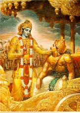
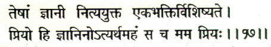
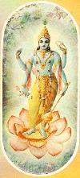

Odiya Celebrities

- Poets
- Kavi Jayadeva
- Kabi Samrat Upendra Bhanja
- Utkalamani Gopabandhu Das
- Vyasakabi Fakirmohan Senapati
- Santhakabi Bheema Bhoi
- Kabisekhara Chintamani Mohanty
- Mayadhara Mansingh
- Kabisurya Baladev Rath
- Gopalakrushna Bhanja
- Prakrutikabi Gangadhar Meher
- Ramakanta Rath
- Sachi Routray [Jnapitha award winner]
- Abhimanyu Samanta Singhara
- Dina Krushna Das
- Bhakta Salabega
- KAntakabi Lakshmikanta Mohapatra
- Jayanta Mahapatra
- Atibadi Jagannath Das
- Sarala Das
- Ashukabi Gopala Krushna Pattanayak
- Sitakanta Mahapatra [Jnanpitha award winner]
- Kuntala Kumari Sabat (Oriya Bulbul)
- Bhaktakabi Madhusudan Rao
- Pallikabi Nanda Kishore Bal
- Himansu Bhusan Sabat
- Rabi Singh
- Prasanna Patasahani
- Radhamohan Gadnaik
- Braja Rath
- Ray Bahadur Gopal Chandra Praharaj
- Soubhagya Mishra
- Nrusingha Rath
- Bibhu Padhi
- Niranjan Mahanty
- Bama Charan Mitra
- Kabivara Radhanath Ray
- Guru Prasad Mohanty [Sahitya Academy Award]
- Annada Shankar Ray
- Writers/Novelists
- Vyasakabi Fakirmohan Senapati
- Kalindi Charan Panigrahi
- Gopinath Mohanty [Jnanpitha Award]
- Nityananda Mohapatra
- Pratibha Ray
- Gobinda Dash
- Kanhu Charan Mohanty
- Bibhuti Bhusan Pattnaik
- Surendra Mohanty
- Rajkishore Ray
- Pandit Vishnu Sharma [Author of Hitopadesha,Pancha Tantra - 5th Century AD]
- Vinod Kanungo [Eminent Writer - GYANAMANDAL - Oriya Encyclopedia]
- Geeta Mehta
- Shantanu Acharya
- Short Story Writers
- Vyasakabi Fakirmohan Senapati
- Manoj Das
- Bibhuti Bhusan Pattnaik
- Pratibha Ray
- Faturananda
- Bhubaneswar Behera [Sahitya Academy Award]
- Kabivara Radhanath Ray
- Birendra Prasad Mohanty
- Drama/One-Act Writers
- Purna Chandra Kanungo
- Gopal Chottray
- Debadash Chottray
- Vyasakabi Fakir Mohan Senapati
- Ganakabi Baishnaba Pani
- Baishnaba Mohanty
- Kartik Ghosh
- Manoranjan Das
- Narasimha Mahapatra
- Bijaya Mishra
- Kabichandra Kalicharan Pattananyak
- Birendra Prasad Mohanty
- Ramachandra Misra
- Gopal Chhotray
- Bhanjakishore Pattanaik
- Freedom Fighters
- Netaji Subhash Chandra Bose
- Jatindranath Mukherjee (Bagha Jatin)
- Utkalagaurava Madhusudan Das
- Buxi Jagabandhu Bidyadhara
- Veer Surendra Sai
- Bisra Munda
- Chakhi Khuntia [alias Chandan Hajuri]
- Albert Ekka
- Utkalamani Gopabandhu Dash
- Gopabandhu Choudhury
- Sriram Chandra Bhanjadeo
- Maharaja Krushna Chandra Gajapati Dev
- Nanda Kishore Das
- Baji Rout
- Saheed Laxman Nayak
- Nabakrushna Chaudhury
- Jadumani Mangaraj
- Balakrudhna Kar
- Manmohan Misra [Political Activist & Poet]
- Scientists
- Samanta Chandra Sekhar [Astronomer]
- Prana Krushna Parija
- Jogesh Pati
- Rabi N. Mohapatra
- Nabakishore Ray [Bhatnagar Award Winner]
- Madhusudan Kanungo [Bhatnagar Award Winner]
- Dipak Bastia
- Sam Pitroda
- Sitananda [Astronomer - 11th. Century AD]
- Siba Prasad Misra
- Trilochan Pradhan [Padma Bhusan Award]
- Tara Pada Das
- Basant Kumar Sahu [Bhatnagar Award Winner]
- Prafulla Kumar Jena
- Musicians
- Classical
- Bala Krushna Das [Saraswati Award Winner]
- Raghunath Panigrahi
- Damodar Hota
- Sunanda Pattnaik
- Shyamamani Devi (Pattanaik)
- Bhubaneswari Mishra
- Adhunika (Modern)
- Akshaya Mohanty
- Prafulla Kar
- Sikandar Allam
- Arati Misra
- Pranab Pattanaik
- Tansen Sing
- Shantanu Mohapatra
- Chitta Jena
- Shekhar Ghosh
- Srikant Das
- Shyamal Mitra
- Trupti Das
- Gita Pattnaik
- Nirmala Mishra
- Bhubaneswari Mishra
- Swagatika Rath
- Subash Dash
- Leela Ghosh
- Folk
- Fakir Pattanaik
- Jitendriya Haripal
- KrishnA Patel
- Hari Nath [Pala]
- Niranjan Kar [Pala]
- Prasanna Samal
- Instrumental
- Bhubaneswar Mishra [Violin]
- Hariprasad Chaurasia [Flute]
- Guru Prasad Mohanty [Tabla]
- Hemanta Kumar Das [Sitar]
- Umesh Prasad Kar [Tabla]
- Harmohan Khuntia [Tabla]
- Mohini Mohan [Flute]
- Religious
- Sangita Mohapatra
- Arati Misra
- Bhikari Bala
- Nimai Charan Harichandan
- Shantilata Barik
- Dancers
- Sanjukta Panigrahi
- Sonal Mansingh
- Madhavi Mudgal
- Kelucharan Mohapatra
- Dheera Pradhan
- Pankaj Charan Das
- Oopalee Operajita
- Kumkum Mohanty
- Deba Prasad Das
- Mayadhar Rout
- Gangadhar Pradhan
- Rabindra Atibudhi
- Shanker Behera
- Artists/Sculptors
- Dinanath Pathi
- Prafulla Mohanty
- Pradyumna Kumar Mahanandia
- Nityananda Behera [Filigree]
- Binod Maharana [Palm Leaf]
- Jatin Das
- Sportsperson
- Sanat Mishra [Badminton]
- Mihir Sen [Swimming]
- Michael Kindo [Hockey]
- Sunil Panda [Basket Ball]
- Madan Mohanty [Cricket]
- Golak Sahu [Football]
- Shiv Sundar Das [Cricket]
- Debashish Mohanty [Cricket]
- Rachita (Panda) Mistry [Athletics]
- Anuradha Biswal [Athletics]
- Minati Mohapatra

- Religious Leaders/Spiritual Devotees
- Bhakta Salabega
- Dasia Bauri
- Chaitanya
- Raya Ramananda
- Ati Badi Jaggannath Das [Founder of Vaishnabism]
- Mutta Balaram Das [Founder of Vaishnabism]
- Jnana Guru Yashovanta Das [Founder of Vaishnabism]
- Shishu Ananta Das [Founder of Vaishnabism]
- Achyuta Das [Founder of Vaishnabism]
- Upagupta [Buddhist Monk - 3rd. Century BC]
- Bandhu Mohanty
- Chandrabhanu Satapathy
- Social reformers
- Utkalamani Gopabandhu Dash
- Godabaris Mishra
- Nilakantha Dash
- Acharya Harihar Dash
- Krupasindhu Misra
- Bagmi Biswanath Kar
- Rama Devi
- Pyari Mohan Acharya
- Gauri Shanker Ray
- Sir T. E. Ravenshaw
- Sailabala Devi
- Malati Choudhury [Jamnalal Bajaj Award]
- Movie Directors/Actors/Actresses
- Directors
- Prasant Nanda [Directed in Naya, Paheli]
- Sisir Mishra [Directed Bhigi Palken]
- Nirad Mohapatra
- Mohd. Mohsin
- Meera Nair
- J.H. Satar
- Nitai Palit
- Man Mohan Mohapatra
- Sadhu Meher
- Dheera Biswal
- Uday Pani
- Actors
- Prasant Nanda [Acted in Naya]
- Dheera Biswal
- Bijoy Mohanty
- Sriram Panda
- Dukhiram Swain
- Jayakrushna Samal
- Shyamalendu
- Sadhu Meher
- Uttam Mohanty
- Ajit Das
- Samuel Sahoo (Babi)
- Sisir Misra
- Hemanta Das
- Chakrapani
- Byomakesh Tripathy
- Jayram Samal
- Nari
- Radha Panda
- Govinda Tej
- Sarat Pujhari
- Priyanath (Peera) Misra
- Gour Ghosh
- Krishna Pandey
- Tima
- Asit Pati
- Subrata Mohapatra
- Chandrachur Singh
- Actresses
- Maheswata (Ray) Dash
- Aparajita Priyadarshini Mohanty
- Sangita Mahapatra
- Luna Mohapatra
- Rameshwari
- Jharana Dash
- Tandra Ray
- Tripura Mishra
- Niharika
- Sujata Anand
- Dolly Jena
- Anita Das
- Vaisali Parida
- Deepa Sahu
- Chandana (Ghosh) Nayak
- Nandita Das
- Music Directors
- Akshaya Mohanty
- Prafulla Kar
- Balakrishna Dash
- Shantanu Mohapatra
- Basudev Rath
- Radhakrishna Bhanja
- Upendra Kumar (Panda)
- Political leaders
- Bai Mundi
- Harekrushna Mahtab
- Surendranath Dwibedy
- Biju Pattanaik
- Nilamani Routray
- Nandini Satpathy
- Kamakshya Prasad Singhdeo
- Kanhu Charan Lenka
- Rabi Ray
- V.V. Giri
- Bhagey Gobardhan
- Jayanti Pattanaik
- Janaki Ballava Pattanaik
- Chintamani Panigrahi
- Giridhari Gamango
- Ramachandra Rath
- R. Jagannath Rao
- Brajamohan Mahanty
- Biren Mitra
- Binayak Acharya
- Biswanath Das
- Historians
- Kedarnath Mohapatra
- Krushna Chandra Panigrahi
- Nabin Kumar Sahu
- Harekrushna Mahtab
- Manmath Nath Das
- Sriram Dash
- Kings
- Kharavela
- Yayati Keshari
- Chodaganga Dev
- Ananga Bhima Dev
- Langula Narasimha Dev
- Kapilendra Dev
- Telenga Mukunda Dev
- Purushottam Dev
- Prataparudra Dev [13th. Century]
- Noted Speakers on Jagannath Sanskruti (Culture)
- Rajat Kar
- Hridananda Ray
- Jibanananda Pani
- Gouri Kumar Brahma
- Sadasiva Rath Sharma
- Braja Mohan Mohanty
- Linguists
- Artaballabha Mohanty
- Janaki Ballava Mohanty (Bharadwaja)
- Kanhucharana Misra
- Prahlada Pradhan
- Kunja Bihari Dash [Folk Literature]
- Kunja Bihari Tripathy [Oriya Script]
- Sahadeva Sahu
- Teachers
- ChintamaNi Acharya
- Ratnakara Pati
- KaruNakara Kar
- Basanta Kumar Das
- Narayana Pati
- Banchhanidhi Satpathy
- Nandakishore Rath
- Mahendra Kumar Rout
- Srirama Chandra Dash
- Debendra Chandra Mishra
- Brahmananda Misra
- Trilochana Pradhan
- Tara Prasad Das
- Prasanna Satpathy
- Ramakrishna Panda
- Debakanta Mishra
- Dinabandhu Mishra
- Srinivas Sahoo [Ex-DPI, VC]
- Rajendra Prasad Mohanty
- Baikuntha Nath Acharya
- Bhubaneswar Behera
- Journalists
- Radhanath Rath [SamAja]
- Sriharsha Mishra [PrajAtantra]
- Saumya Ranjan Pattanayak [SambAda]
- Gauranga Charan Rath [AIR News Anchorperson]
- Jatin Das [AIR News Anchorperson]
- Manorama Mohapatra [SamAja]
- Bhartuhari Mahtab
- Janaki Ballava Pattnaik [Paurusha]
- Godavarish Mahapatra [NiAkhunTA]
- Bichitrananda Kar
- Pradyumna Bal [Pragatibadi]
- Lawyers
- Utkalagaurava Madhusudan Dash
- Ranganath Mishra [Chief Justice]
- Ranjit Mohanty
- Radha Charan Pattnaik
- Srirama Chandra Dash
- Miscellaneous
- J.P. Das [Physician]
- P. Tejeswar Rao [Surgeon]
- Bansidhar Panda [Industrialist]
- Arup Pattanaik [DCP, Bombay]
- Baidyanath Mishra [Economist and Educationist]
- Apurba Kishore Bir [Cinematographer]
- Prasanta Pattnaik [Economist]
- Jitendra Mohanty [Philosopher]
- Kulamani Mishra [Opthalmologist]
- Chandi Dash [Opthalmologist]
- Satakadi Hota [Literature]
- Bankim Behari Pattnaik [Physician - Awarded Cuttack Gouraba]
- Ratnakar Pati [Philosopher]
- Sanatan Rath [Neurologist]
- Lakshmidhar Nayak [Nationalist]
- Mohapatra Nilamani Sahoo [Writer and Speaker]
- Lalitendu Mansingh [Ambassador/Diplomat]
- Sadasiva Mishra [Economist and Educationist]
- Nilamani Senapati [First Oriya ICS]
- Hrishikesh Panda [Oriya IAS Topper]
- Pramod Pati [Documentary Film Producer]
- Ghanashyam Mahapatra [Documentary Film Producer]
- Dilip Dutta [Cinematographer]
- Srinivas Mahapatra [Cinematographer]
- Ganesh Mahapatra [Writer-Journalist-Filmmaker]
Prominent Personalities from Orissa is compiled from the submissions through ORNET, Fall 1995
Contributions Acknowledged
Please send New Submissions to dmisra@excite.com
 
Srimad Bhagavad-Gita/Saptamodhyaya
| This Page Has Been Accessed | Times Since |
|---|
was last updated on :